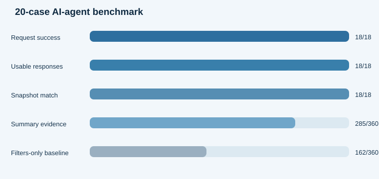

01 · The project
A more usable view of uneven data
The CDC’s mental-health indicators span different years, questions, places, and demographic groups. Since not every combination has the same coverage, the data can be difficult to compare and easy to misread. Mind the Gap puts those filters, year-by-year values, and coverage notes in one interactive view.
Guiding question
How do population-level mental-health indicators vary by year, location, and population—and what gaps should a user keep in mind?
Intended audience
People in public health and healthcare, organizations, students, and others exploring CDC mental-health trends.
Supported decision
Which differences or missing areas may deserve further research, outreach, or resource planning? The tool helps surface questions; it does not prescribe an intervention.
How the design evolved
The midterm project used exploratory charts to review indicators and demographics. The final experience turns that investigation into adjustable filters and an in-page graph and explanation. The app allows comparisons by location or demographic factor, and exposes year comparison only for a single selected year to keep the comparison meaningful.
02 · The data
CDC U.S. Chronic Disease Indicators
The app uses the Mental Health topic subset of the CDC U.S. Chronic Disease Indicators dataset, covering 2019–2023 in this project. Its questions include adult depression, frequent mental distress, postpartum depressive symptoms, poor mental health among high-school students, and average mentally unhealthy days among adults.
Coverage is part of the result. Measures use percentages except the average mentally unhealthy days question. Availability varies by selected question, place, and population. Missing values are not zero, and differences in coverage can limit direct comparisons.
The midterm exploration also showed why these caveats matter: some indicators and demographic groups had less complete coverage than others. Those earlier observations are project background, not a substitute for the current filters and results.
03 · System and method
How it works
Choose a CDC question, year range, locations, and population or comparison factor. The existing smolagents workflow retrieves and checks CDC records, analyzes annual values, and returns structured results for the app.
1 · Select filtersQuestion, years, places, and demographic or comparison group.
2 · Agent analyzes dataExisting tools retrieve records, check coverage, and calculate annual values.
3 · Generate explanationThe language model summarizes the structured result.
4 · ReviewSee the graph, missing-year coverage, summary, and historical slope.
Traditional ML
For each comparison group, scikit-learn linear regression uses year as the input and annual mean value as the outcome. Its slope describes historical direction, not a forecast.
Interaction decisions
The app sets the unit from the question. “Compare by year” appears only when one year is selected; multi-year selections support comparisons by location or demographic factors.
Guardrails and feedback
The summary is instructed to avoid invented values, causal claims, diagnosis, or treatment advice. Empty results and service errors receive clear messages and recovery guidance.
05 · Official benchmark
20 scenarios against the live AI agent
The fixed benchmark calls the existing Render /analyze workflow and compares structured annual values and coverage with independent calculations from the bundled CDC snapshot.
Usable analysis results18/18
All valid analysis scenarios returned usable results; both invalid-input cases were rejected as expected (2/2).
Structured snapshot matches18/18
Annual values and coverage matched independent calculations from the included snapshot.
Summary evidence coverage285/360
79.2%, versus 162/360 (45%) for the comparable filters-only baseline.
11.405sMedian response time · p95 14.902s
A01 · 15/20Successful structured comparison example
A17 · 11/20Lowest summary evidence score; no numeric values

What to improve
For valid cases with no numeric observations, make the explanation explicitly say that no annual numeric comparison or trend is available. Human-review flagged summary checks to separate true omissions from valid paraphrases; semantic review is still pending.
Run and inspect the benchmark protocol and results, fixed cases, recorded responses, and review sheet. Evidence checks are not human-rated semantic accuracy. Baseline applies only to summary evidence coverage.
07 · Demonstration
Project walkthrough
A final-project recording is still needed. Add a video showing the user question, chosen filters, resulting graph and AI explanation, missing-year coverage, and the optional 20-check evaluation.
Video link: Add the final walkthrough recording URL here.